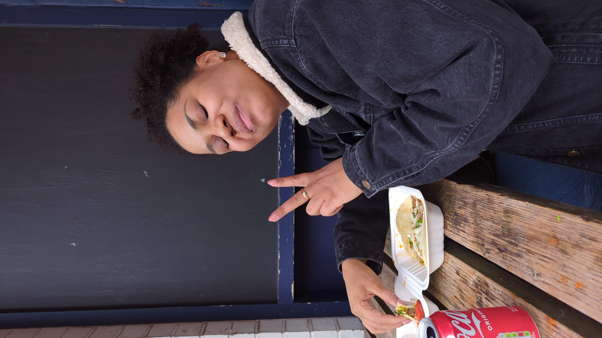

Introduction
Hello! My name is Shandon Williams and I started coding on the 5th September 2024. I'm learning to code so that I can start a new career, initally as a front-end developer and then seeing where I go from there
Quick Facts
Here are some quick facts about me
- I was born on Thursday 14th November 1996
- I was born in Guy's Hospital in London and have lived in London pretty much my whole life
- My favourite number is 17
- When I was younger, I wanted to be a footballer
- I am fluent in Spanisha and love learning languages. I'd like to learn Arabic, Portuguese, Swahili & many other languages
Family
Now I want to talk to you a bit about my family, who are very important to me.
My immediate family consists of my Mum, older sister and my two younger brothers.
Mi madre
My Mum is called Samantha and she's 46 years old. She loves reading James Patterson and other crime books, watching crime shows and drinking tea.

Mi hermana mayor
My older sister is called Shalada. She's 31 years old and lives in South Kensington. She likes sleeping, is training to be a beautician and loves dancing.
Mi primer hermano
My oldest brother is called Shawn. He's 15 years old and is in Year 11. He loves anime, particularly Yugioh and Attack on Titan. He also loves playing computer. And he likes and is very good at drawing.

Mi hermano más joven
Finally, my youngest brother, Shaye. He's 11 years old and is in Year 7. He enjoys baking and cooking, he loves watching films and TV shows (at the moment he's watching Young Sheldon) and he loves reading
My education
Now I'm going to speak briefly about my education. I've studied at:
- Durham University
- City of London School
Here's a bit more information about what I studied:
| Place of study | Country | Years of study | Subjects studied | Grades |
|---|---|---|---|---|
| Durham University | England | 2015-2019 | Economics, Spanish | 2:1 |
| City of London School | 2008-2015 |